Sakurai, Nara: things to do, food and stays
Sakurai · Nara
Sakurai
Highlighted on the Nara map.

Stay
ホテルルートイン桜井駅前
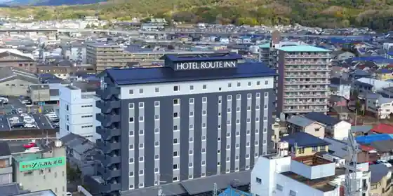
Hotel Route Inn Sakuraieki Mae
Hotel in Sakurai with breakfast available and a large communal bath.
Auberge de Senvie
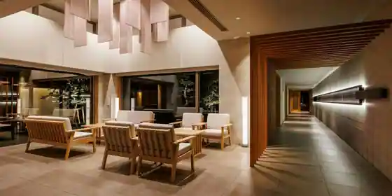
Auberge de Senvie
とみやま館
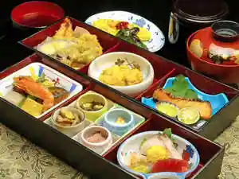
Tomiyama Kan
Inn in Sakurai; 1-minute walk from (Sakurai Station.
町家ゲストハウス みもろ
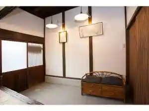
Choka Guesthouse Mimoro
Guesthouse in Miwa, Sakurai with a renovated traditional house; 3-minute walk from Jrmiwa Station.
町家ゲストハウス三輪
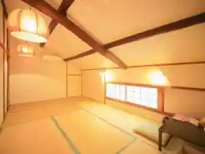
Choka Guesthouse Miwa
ゲストハウス和櫻
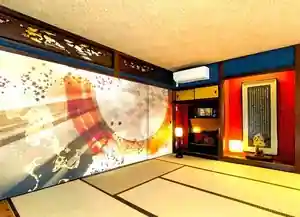
Guesthouse Wa Sakura
Guesthouse in Sakurai with family-friendly stays; 4-minute walk from Sakurai Station.
宿Joan
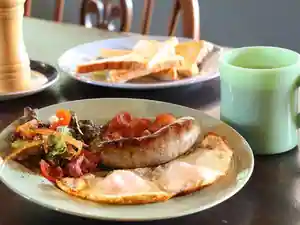
Yado Joan
ホテル奈良さくらいの郷
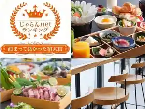
Hotel Nara Sakuraino Sato
多武峰観光ホテル
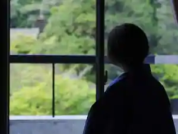
Tonomine Kanko Hotel
＜長谷寺まで徒歩5分＞湯元 井谷屋～創業160年の天然湯宿～
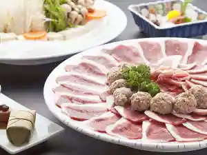
Hase Tera Made Toho 5 Fun Yumoto Itani Ya ~ Sogyo 160 Nen No Tennen Yuyado ~
Inn at Hasetera Onsen in Hase, Sakurai.
Dining
味の風 にしむら
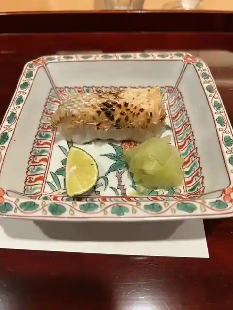
Aji No Kaze Nishimura
三輪山本 お食事処
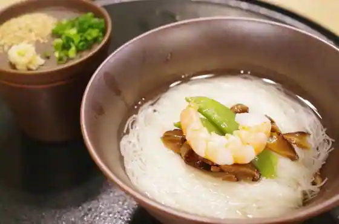
Miwa Yamamoto O Shokuji Tokoro
柿の葉おすし山の辺 桜井本店
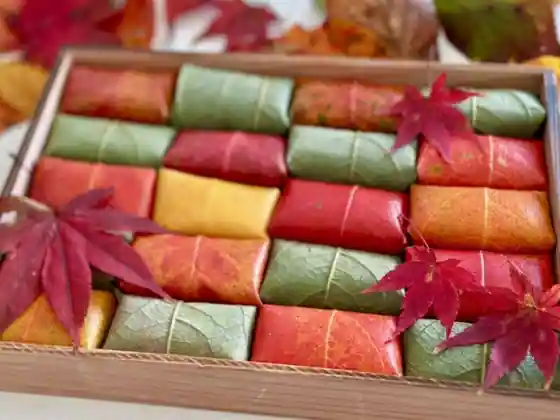
Kaki No Ha Osushi Yama No Hen Sakurai Hon
総本舗 白酒屋
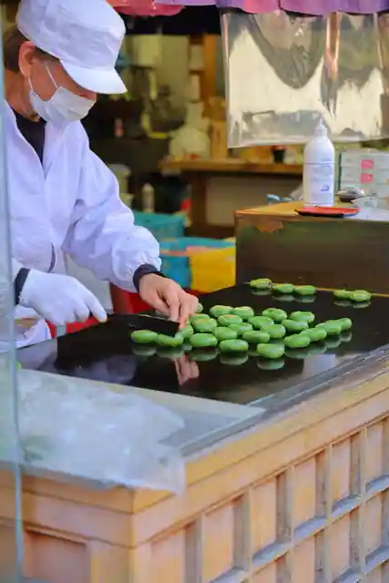
So Honpo Shirozake Ya
白玉屋榮壽 本店
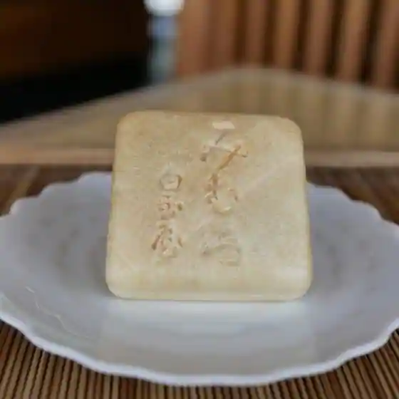
Shirodama Ya Eiju Hon
蕎麦がき屋
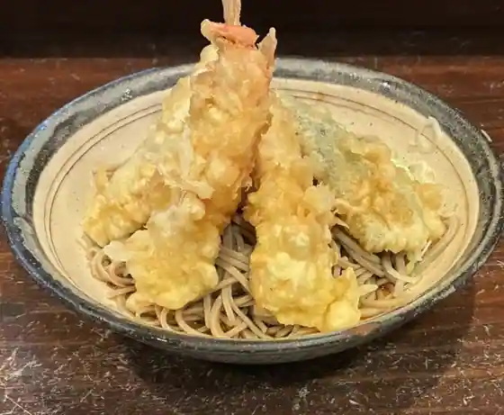
Soba Gaki Ya
鳥敏
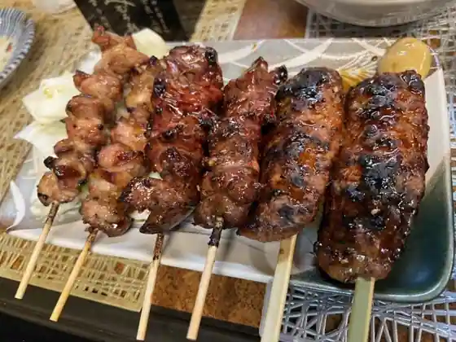
Tori Toshi
千寿亭
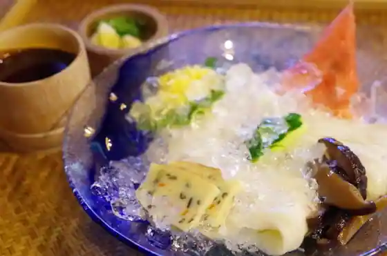
Chizu Tei
Pizzeria nina
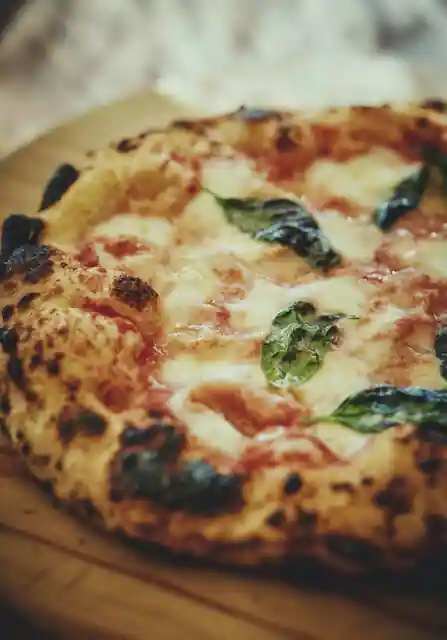
Pizzeria nina
与喜饂飩
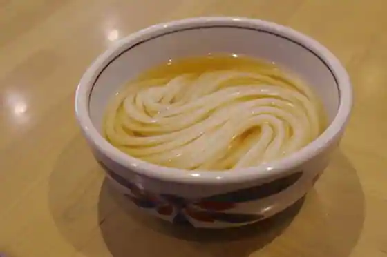
Yo Ki Udon
三輪そうめん流し
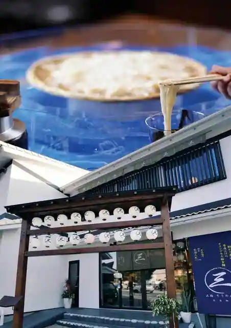
Miwa Somen Nagashi
そうめん處 森正
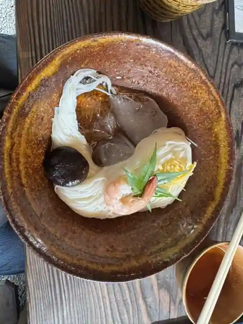
Somen Tokoro Morimasa
てのべ たかだや
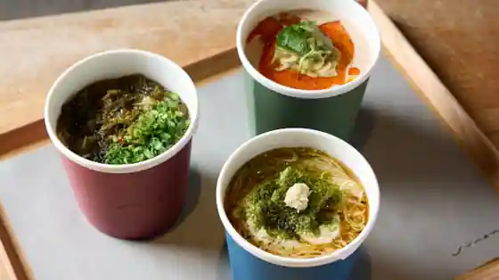
Tenobe Takadaya
笠そば処
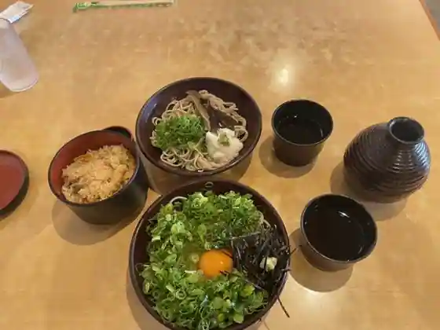
Kasa Soba Tokoro
らｰめん いち庵
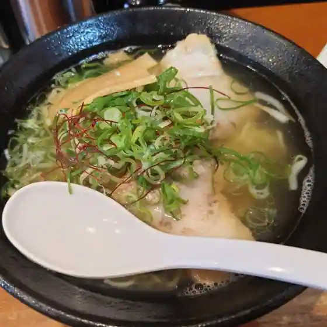
RaMen Ichi Iori
福神堂
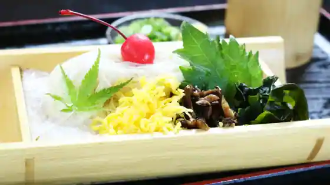
Fukujin Do
手打ちうどん ぶれーど・う
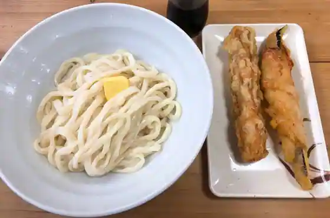
Teuchi Chiudon Buredo U
ボーノ
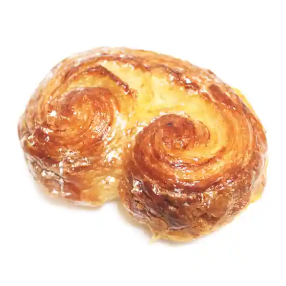
Bono
今西酒造 大神神社参道店
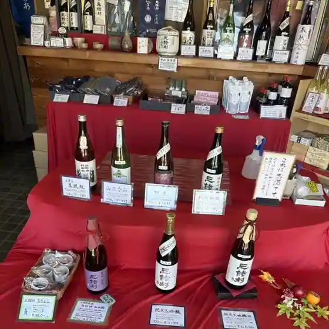
Imanishi Shuzo Daijin Jinja Sando
飛鳥彩瑠璃の丘 天極堂テラス
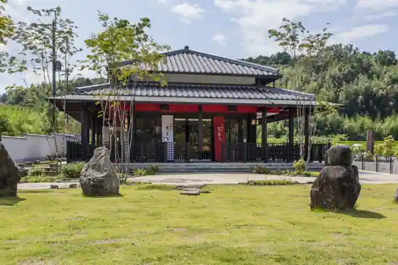
Asuka Sai Ruri No Oka Tenkyoku Do Terrace
UG
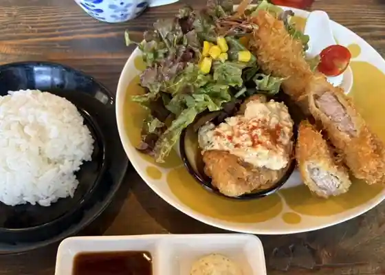
UG
総本家 寿屋
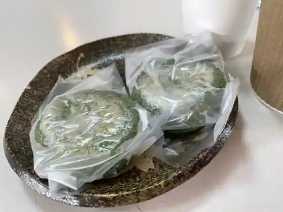
So Honke Hisashi Ya
三輪の里池側
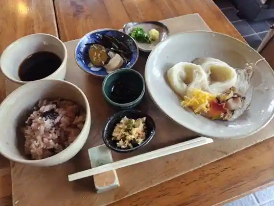
Miwa No Sato Ikegawa
長谷路
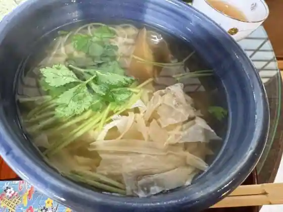
Hase Michi
Sights
Hase Tera
Abe Monju In

Daijin Shrine

Tanzan Shrine

Sakurai Ritsu Maizo Bunkazai Center

Shorin Tera
Hoki In
Hashihaka Burial Mound
Kasayama Sanpo Ko Shrine
Yama no Hen no Michi
Hibara Shrine
Nado Ya Shrine
Miwa Yama
Kyo I Shrine
Yo Ki Tenma Shrine
Sakurai Uda Koiki Rengo
Kanaya no Sekibutsu
Furutsu Land Morioka Toshihiro Mikan Sono
Umi Zakuro City Kannon Do
Miwa Za Ebisu Shrine
Koeki Zaidanhojin Kita Art Museum
Tsuna Etsu Shrine
Moto Sakazuki Mei Shrine (Ko Tsutsumi)
Yamaguchi Shrine
Ho Ga no Yama Burial Mound
Sakurai Tourism Association